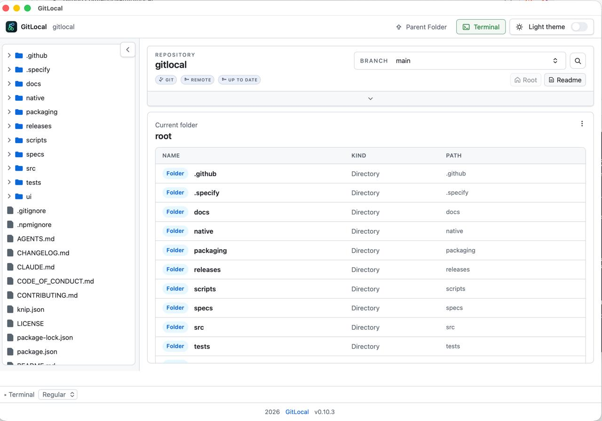

FIND YOUR WAY AROUND
Browse local projects like GitHub
Open any folder or git repository and move around it the way you would on GitHub, without waiting on a browser tab or opening an IDE.

What you get
- A fast, lazy-loading file tree. Folders load as you open them, and the whole tree works from the keyboard: arrow keys to move, Enter or Space to open.
- Works on regular folders too. A git repository is not required. Point GitLocal at any folder of files.
- A dashboard for the repository root. Status, key documents, recent files, recently changed files, and plain directory browsing in one place.
- Pick up where you left off. Run
gitlocal .for the current folder, pass any path, or rungitlocalwith no argument to reopen the last folder you used. - Light and dark themes.
Try it in one command
npx gitlocal
Needs Node.js 22+. Full install guide, including the macOS app →